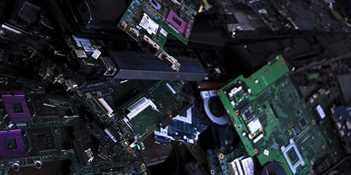

Why is e-waste a problem?
E-waste ranges from large household appliances, like refrigerators and freezers, to small household appliances, like toys and remote controls. In 2006, the United Nations estimated the amount of worldwide electronic waste discarded each year to be about 50 million metric tons and that this could rise by as much as 500% over the next decade. Globally, e-waste makes up about 5% of all solid waste.